The order of the topics
The six exam topics: A_1 Exceptions, A_2 Operator overloading, A_3 Assignment operator, B_1 Recursion, B_2 Linked lists and B_3 Template specialisation.
Try each problem before you open the answer.
About the word Assumed
The re-practical paper gives two class diagrams and the rules on page 1. It does not give code, and it does not describe the build. Two kinds of rule had to be chosen. The build, upload and marking rules (the makefile, -Werror, valgrind, uploading one file, and a mark of 0 for code that does not build) come from the COS 110 practical exam of 31 October 2026, called the HRMS practical here. Where a diagram is silent, for example what operator+ does when the menu is full, a rule had to be chosen so that the code could be written and tested.
Every such rule is marked Assumed. In the exam, the complete UML, the given header files and the question text decide. If they differ from an Assumed rule here, follow the exam.
The rules that decide your mark
The re-practical lasts one and a half hours. It has six questions, and you need two of them: one from each section. So how you choose, and how you work, matter as much as what you know. First the rules the paper gives, then the rules taken from the HRMS practical, then the mark.
What the exam paper says
| Rule on page 1 of the paper | What it means for you |
|---|---|
| 1.5 hours. | Two questions in 90 minutes: about 40 minutes for the first and 30 for the second, with 10 minutes at the start and 10 at the end. |
| Two sections, A and B, with three questions each. Do at least one question from each section. | You need two working answers: one from A and one from B. |
| You may change questions, but no extra time is given. | Decide early. A late switch leaves little time to start again. |
| If you do more than one question in a section, only the highest mark in that section counts. | A second question in the same section can only help, and only if time is left. |
| Open book, but only the course notes on ClickUp. | Swift Tuition material, the cheat sheet included, is not a ClickUp course note. It is for preparation only. |
| No calculators or other electronic devices, apart from the Informatorium computers. | Leave your phone in your bag. Practise without it. |
| A printed copy of the paper is given. It is for reference and notes only, and it is not marked. | Draw traces and boxes on it. Your answer goes in the code file. |
The six questions, from pages 2 and 3 of the paper:
| Section A: the Menu scenario | Section B: the binary strings scenario |
|---|---|
| A_1 Exceptions | B_1 Recursion |
| A_2 Operator overloading | B_2 Linked lists |
| A_3 Assignment operator | B_3 Template specialisation |
What the paper does not say
The paper does not describe the files, the build or the marking. The practice questions follow the rules of the HRMS practical exam, written on 31 October 2026:
Assumed
Each question asks for one function (or one small set) in one answer file, such as A_3.cpp. A makefile builds with g++ -g -std=c++98 -Wall -Werror and then runs valgrind. Memory is marked. Code that does not compile, or a program that stops abnormally, scores 0 for that question. You upload only your answer file; every other file, main.cpp too, is replaced by the copy used for marking. Check the exam’s own instructions on the day.
The mark out of 33
Page 1 of the paper gives the formula. Each question is out of 100, so each score becomes a fraction from 0 to 1. In each section, the highest fraction is multiplied by 16.5. Then the two sections are added:
mark = max(A_1/100, A_2/100, A_3/100) × 16.5 + max(B_1/100, B_2/100, B_3/100) × 16.5
So the maximum is 16.5 + 16.5 = 33.
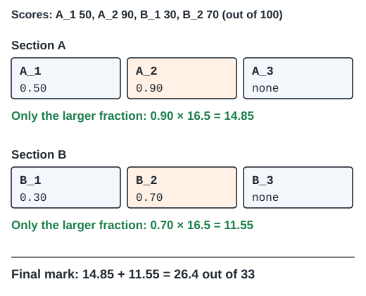
Try this
Suppose you score 60 for A_3, 40 for A_1 and 80 for B_2, and do nothing else. What is your final mark out of 33?
Hint: work out one fraction per section first.
In Section A the larger fraction is 60/100 = 0.6, from A_3. The 40 for A_1 is ignored. In Section B the only fraction is 80/100 = 0.8. So the mark is 0.6 × 16.5 + 0.8 × 16.5 = 9.9 + 13.2 = 23.1 out of 33.
Only one question per section counts. So finish one question before you start another in the same section.
Skipping a section is costly. A full 100 in Section A alone gives 16.5. Half marks in one question of each section also give 0.5 × 16.5 + 0.5 × 16.5 = 16.5.
Some mistakes cost a few marks. Under the Assumed HRMS rules, others cost the whole question. These five lead to 0, so check for them every time.
Assumed
A file that does not compile, or a program that stops abnormally, scores 0 for that question (HRMS practical rule).
1. A warning
-Werror turns every warning into an error, so the program is never built. With the practice flags, g++ stops on each row of this table.
| Warning | Example that fails | Fix |
|---|---|---|
| Comparing signed and unsigned | index >= bits.length() with an int index. A string’s length cannot be negative (it is unsigned), while an int can (it is signed). | Cast the length: index >= (int)bits.length() |
| A function that can reach its end without returning | operator= with return *this; only inside the self-assignment if | Add the final return *this; |
| Catch order | catch (NotFoundException& e) written before catch (DessertNotFound& e) | Catch the derived class first |
| Catching by value | catch (Exception e) | Catch by reference: catch (Exception& e) |
g++ prints these first lines for the four rows, in order:
B_1.cpp:8:45: error: comparison of integer expressions of different signedness: ‘int’ and ‘std::__cxx11::basic_string<char>::size_type’ {aka ‘long unsigned int’} [-Werror=sign-compare]
A_3.cpp:15:1: error: control reaches end of non-void function [-Werror=return-type]
A_1.cpp:13:7: error: exception of type ‘DessertNotFound’ will be caught by earlier handler [-Werror=exceptions]
A_1.cpp:20:24: error: catching polymorphic type ‘class Exception’ by value [-Werror=catch-value=]2. Code that is not C++98
These do not exist in C++98: nullptr (write NULL), to_string, stof, auto as a type (auto x = 5;) and the range-based for (int x : list). If nullptr is used, g++ stops with:
A_2.cpp:8:30: error: identifier ‘nullptr’ is a keyword in C++11 [-Werror=c++11-compat]
3. A crash
Assumed (HRMS rule): a program that stops abnormally scores 0.
Reading through a NULL pointer, or past the end of an array, stops the program. An empty menu slot is NULL (Assumed), so items[i]->getType() on an empty slot crashes. valgrind reports:
Invalid read of size 1 Address 0x0 is not stack'd, malloc'd or (recently) free'd Process terminating with default action of signal 11 (SIGSEGV)
Every time you write ->, ask: can the pointer on the left be NULL here?
4. An uncaught exception
Assumed (HRMS rule): a program that stops abnormally scores 0.
If a function throws and nothing catches the exception, the program stops abnormally. For example, findFirst("Drink") throws InvalidType. Called outside a try block in main:
cout << menu.findFirst("Drink") << endl;
cout << "This line never prints" << endl;The program prints the first line below, and valgrind adds the second:
terminate called after throwing an instance of 'InvalidType' Process terminating with default action of signal 6 (SIGABRT)
5. Handing in the wrong thing
Assumed
As in the HRMS practical, you upload only your answer file, for example A_3.cpp. A change in any other file is lost, so code that needs it does not compile. Follow the exam’s own instructions if they differ.
Worked: you have 20 minutes left. A_2 is finished and matches the expected output. B_1 builds but crashes on the last line of main.cpp. Should you start B_3?
No. Under the Assumed rule, a crash makes B_1 score 0, so Section B would add nothing. B_3 cannot be finished in 20 minutes either. Use the time to find the line that crashes in B_1. valgrind names the line, because of -g. Fix it, or guard it with an if. A B_1 that runs and gets half the output right adds 8.25 marks.
Under the Assumed HRMS rules, which of these ends with 0 for the question? Decide for each one before you open the answer.
- The output is right, but valgrind reports
definitely lost: 48 bytes in 1 blocks. for (int i = 0; i < str.length(); i++)appears in your file.- Your function throws an exception that
main.cppdoes not catch. - The last line of your output has one space too many.
- Your answer calls a function that you added to
Menu.hyourself.
- Not 0. The program runs, so it is marked, but memory is marked too, so some marks are lost.
- 0.
i < str.length()compares a signedintwith an unsigned length. That is a warning, and-Werrorturns it into an error. Writei < (int)str.length(). - 0. An uncaught exception stops the program abnormally.
- Not 0, but the check of that line fails. Copy the expected output character by character.
- 0.
Menu.his replaced by the given copy when your work is marked, so your file no longer compiles.
Read both class diagrams
Section A is about the menu of a restaurant called Segfault and Sizzle. A Menu keeps Item pointers in an array, and its functions throw exceptions from a family of nine exception classes. Section B is about binary strings. A Binary keeps one bool per bit, and a BinaryStrings list keeps Binary objects in template nodes, Node<T>.
A UML class diagram draws each class as a box with three parts: the class name, then the attributes (the data each object stores), then the operations (the member functions). Lines between boxes show how classes are connected. Here is Figure 1 of the paper, redrawn. Ignore the orange numbers for now. They come back in the section on what the diagrams leave open.
![Section A partial UML, redrawn. Menu has maxSize and an Item pointer-pointer called items, and nine operations: the constructor, the destructor, operator+, findFirst, findLast, averagePrice, numberAbove, numberBelow and numberEqual. A plain line joins Menu to Item, and Menu to Exception. Item has type, name and price, a constructor, a copy constructor, a destructor and three getters; getPrice is shown returning string. Exception has a private msg, a constructor and printException. InvalidType, NothingMatchingFilter and NotFoundException are derived from Exception; NothingAboveMinimumValue and NothingBelowMaximumValue from NothingMatchingFilter; StarterNotFound, MainNotFound and DessertNotFound from NotFoundException. Orange numbers 1 to 8 mark what the diagram leaves open.](assets/diagrams/uml_a_m.svg)
Each symbol in a box changes the C++ you write:
| Symbol | Meaning | Example here |
|---|---|---|
- | private: only the class’s own functions (and its friends) can use it | - items: Item** in Menu |
+ | public: any code can use it | + findFirst(string): Item |
name: type | an attribute called name with that type | maxSize: int |
op(params): type | a function, its parameter types and its return type | numberAbove(string, float): int |
| no return type | a constructor or a destructor (one exception on Figure 1: operator+(Item*) also shows no return type; see gap 1) | Menu(int), ~Item() |
| hollow triangle | inheritance: the triangle touches the base class, and the class at the other end is derived from it | InvalidType is derived from Exception |
dashed box with T | the class is a template with type parameter T | Node |
| plain line | the two classes are linked: one holds or uses the other | Menu to Item |
UML writes the name first and the type second. C++ writes the type first. So - maxSize: int becomes int maxSize; under private:.
The number of * signs, and any &, decide how the code is written. A reference (& in a type) is another name for an object that already exists. It does not make a copy.
| Type in the UML | Read it as | In C++ |
|---|---|---|
Item* | a pointer to one Item | Item* p = new Item('S', "Soup", 50); |
Item** | a pointer to an array of Item pointers | items = new Item*[maxSize]; then items[i] is an Item* |
const Item& | a reference to an Item that may be read but not changed | the parameter of the copy constructor |
Item as a return type | a copy of an Item is returned | findFirst returns a copy, made by Item(const Item&) |
bool* | a pointer to an array of bool | array = new bool[size]; |
bool& as a return type | the caller gets the real bool, so it can change it | b[0] = true; |
Node<Binary>* | a pointer to a node whose T is Binary | head, or NULL for an empty list |
Node<T>*& | a reference to a pointer: the caller gets the link itself | n->next() = other; changes the link |
![Section B partial UML, redrawn. Binary has a bool pointer called array and a size, a constructor from a string, a copy constructor, a destructor, two operator[] (returning bool reference and const bool reference) and getSize. BinaryStrings has head, a pointer to Node of Binary, and size, with a constructor, a destructor, prepend, getHead and calculatePos. Node is a template class with data of type T and nextNode, a constructor, a destructor, getData returning T reference and next returning a reference to a Node pointer. Orange numbers 1 to 6 mark what the diagram leaves open.](assets/diagrams/uml_b_m.svg)
Try this
In a Node<Binary>, what are the types of data, of getData() and of next()?
Hint: replace every T in the Node box with Binary.
Replace T by Binary everywhere. data is a Binary: the node holds a whole Binary, not a pointer to one. getData() returns Binary&, a reference to that Binary. next() returns Node<Binary>*&, a reference to the pointer to the next node.
Worked: from the UML box to the C++ class
Take the Item box. The name gives class Item. The three attributes start with -, so they go under private:, with the type moved to the front: - price: float becomes float price;. The operations start with +, so they go under public:. + Item(char, string, float) has no return type, so it is a constructor. + ~Item() is the destructor.
This is the Item header used in the reference code. Two things in it are not on the diagram:
class Item {
private:
char type;
string name;
float price;
public:
Item(char type, string name, float price);
Item(const Item& other);
~Item();
char getType() const;
string getName() const;
float getPrice() const;
friend ostream& operator<<(ostream& out, const Item& item);
};From the exam paper
The paper says to refer to the provided header files for virtual and const functions, and that each class has a print function in the form of the stream insertion operator, operator<<.
const after a member function’s parameter list is a promise: the function does not change the object. Through a const Item&, C++ allows only const member functions to be called. So the header tells you which getters you may call inside a function that receives a const reference.
friend means: this function is not a member of Item, but it may read Item’s private attributes. operator<< cannot be a member, because the left side of cout << item is cout, not an Item. As a friend it may still read the private attributes. The A_2 section shows why.
Assumed
getPrice() returns float and is const, like the other two getters. The diagram shows getPrice(): string; see gap 2 below.
Worked: from the C++ header back to the UML
Now go the other way, with the BinaryStrings header from the reference code:
class BinaryStrings {
private:
Node<Binary>* head;
int size;
public:
BinaryStrings();
~BinaryStrings();
void prepend(const Binary& b);
Node<Binary>*& getHead();
int calculatePos();
friend ostream& operator<<(ostream& out, const BinaryStrings& list);
};Each member under private: gets a - and each one under public: a +. Move the type to the end, after a colon. A void function shows : void. Parameter names are left out:
BinaryStrings ------------------------------------ - head: Node<Binary>* - size: int ------------------------------------ + BinaryStrings() + ~BinaryStrings() + prepend(const Binary&): void + getHead(): Node<Binary>*& + calculatePos(): int
The friend function operator<< is not a member, so the diagram leaves it out. That is why the paper mentions it in words instead.
Your turn: finish the translation
Write each UML line as a C++ declaration, and say which section it goes in (private: or public:).
- nextNode: Node<T>*+ numberBelow(string, float): int+ getData(): T&+ NothingMatchingFilter(string)
Node<T>* nextNode;underprivate:int numberBelow(string type, float value);underpublic:. The UML gives only the parameter types, so you choose the names.T& getData();underpublic:NothingMatchingFilter(string filter);underpublic:, insideclass NothingMatchingFilter : public Exception. It has no return type, so it is a constructor.
Try one on your own
Draw the UML box for this header. Then say which line on Figure 1 connects Exception to the other classes, and what the line means.
class Exception {
private:
string msg;
public:
Exception(string msg);
virtual ~Exception();
void printException();
friend ostream& operator<<(ostream& out, const Exception& e);
};Exception ------------------------------ - msg: string ------------------------------ + Exception(string) + ~Exception() + printException(): void
msg is under private:, so it gets a -. The diagram on the paper does not show ~Exception(): virtual is one of the things the headers add. virtual in front of a member function lets a derived class replace that function; the section “What the diagrams leave open” comes back to it. The friend operator<< is not drawn. Exception is the base class at the hollow triangles: eight classes are derived from it, directly or through another class. A plain line also joins Menu to Exception.
Assumed
The line from Menu to Exception means that Menu’s functions throw these exceptions.
Check any translation with three questions. Does every member in the box appear in the class, with the same name and type? Does every - sit under private: and every + under public:? Does every pointer or array attribute match a line on the diagram? Here items matches the Menu to Item line, head the BinaryStrings to Node line, and nextNode the line from Node back to Node.
Who owns what: both scenarios in memory
Every new needs exactly one delete, and every new[] one delete[]. valgrind checks that. So before you write any function, you need to know which object deletes which other objects. That responsibility is called ownership: “A owns B” means “A deletes B”.
Neither diagram says who owns what. These are the rules in the reference code and the practice questions.
- Item stores three values and points to nothing, so it owns nothing. Its copy constructor,
Item(const Item&), makes a new item as a copy of an existing one, as inItem b(a);. - Menu stores
maxSizeanditems, an array ofItem*. Memory made withnew(the heap) stays until something deletes it. - Binary stores
sizeandarray, an array ofboolmade withnew bool[size]. It owns that array. - Node<T> stores
data, a wholeT, andnextNode. BinaryStrings storesheadandsize.
Assumed
Menu(n) makes an array of n pointers, every slot starts as NULL, and an empty slot is NULL. There is no count member. The menu owns its items: ~Menu() deletes each item, then the array. operator+ puts the item in the first NULL slot; if the menu is full, it deletes the item. ~Node() is empty and does not delete the next node. ~BinaryStrings() deletes every node.
This picture shows Menu b(4) holding three items.
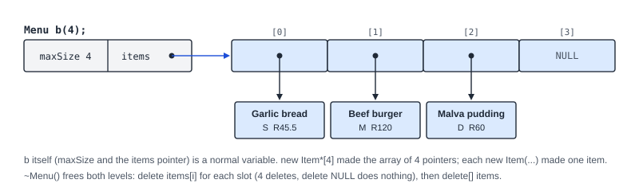
The menu frees both levels in its destructor, from the reference code:
Menu::~Menu() {
for (int i = 0; i < maxSize; i++) {
delete items[i];
}
delete[] items;
}The loop runs for i = 0 to maxSize - 1: the condition i < maxSize is false at i = maxSize, one past the last slot. delete on a NULL slot does nothing, so empty slots need no if. The order matters: after delete[] items, the slots must not be read again.
Try this
A Menu m(3) holds two items. How many news made its memory? How many deletes does ~Menu() run?
Hint: count the array as one new.
Three news: one new Item*[3] and two new Item(...). ~Menu() runs delete items[i] three times, once on a NULL slot, which does nothing. Then it runs one delete[] items.
A Binary owns one array; a node holds a whole Binary
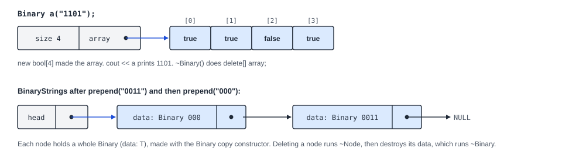
In Node<T>, data is a T, not a T*. So new Node<Binary>(b) copies b into the node with Binary’s copy constructor. Deleting a node runs ~Node, then destroys its data, which runs ~Binary and frees that Binary’s array. (In the HRMS practical, data was a T*. It is not here.)
So every copy of a Binary must have its own array. The reference copy constructor makes a new array and copies each bit:
Binary::Binary(const Binary& other) {
size = other.size;
array = new bool[size];
for (int i = 0; i < size; i++) {
array[i] = other.array[i];
}
}Compare a copy constructor that copies only the pointer, array = other.array;. With the reference main, b is a copy of a, and b[0] = true; then changes a too. The first printed line becomes:
a: 1101, b: 1101, size 4
and valgrind reports, when the second destructor frees the same array again:
Invalid free() / delete / delete[] / realloc()
The same happens one level up. A ~Menu() that runs only delete[] items; frees the array but not the items. valgrind then reports:
48 bytes in 1 blocks are definitely lost in loss record 1 of 5
Worked: the reference main for Section B starts like this. How many Binary arrays exist after the last line, and who frees each one?
Binary a("0101");
Binary b(a);
b[0] = true;
cout << "a: " << a << ", b: " << b << ", size " << b.getSize() << endl;
BinaryStrings list;
cout << "list: " << list << endl;
list.prepend(a);
list.prepend(b);a and b each have an array: b is a deep copy, with its own array, not the same array as a. Each prepend makes a node with its own copy, so the two nodes hold two more arrays: four in total. ~Binary frees the arrays of a and b at the end of main. ~BinaryStrings deletes both nodes, and each node’s data frees its own array.
A Menu m(2) is empty. Then m + new Item('S', "Soup", 50) + new Item('M', "Pie", 80) + new Item('D', "Tart", 40); runs. What is in each slot? Which delete matches each of the four news in this line and in Menu m(2)?
Slot 0 holds Soup and slot 1 holds Pie. The third + finds no NULL slot, so operator+ deletes the Tart (Assumed rule). The four news: new Item*[2] is freed by delete[] items in ~Menu(); Soup and Pie are freed by delete items[i] in ~Menu(); the Tart is freed by delete item; in operator+.
What the diagrams leave open
A diagram shows names and types. It does not say what a function does when the menu is full, what calculatePos() calculates, or what an exception’s message is. Code cannot be written or tested without an answer. So each gap below has one chosen rule, marked Assumed. On the day, the given header files and the question text decide.
From the exam paper
Page 1 says that the complete UML diagrams will be given during the re-practical. The two diagrams on the paper differ. The caption of Figure 1 (Section A) says “Complete UML Class Diagram”, but the text above it says “partially complete”. The caption of Figure 2 (Section B) says “Partial”.
So expect the same classes in Section A on the day, perhaps with more functions. Expect new functions in Section B, and perhaps a new class. Three more sentences on pages 2 and 3 matter:
- Each class has a print function in the form of the stream insertion operator. So every class has an
operator<<, even though no diagram shows one. - The functions that a question asks for are only available in that question. So the A_2 folder may not contain the A_1 function at all.
- Under Figure 1: refer to the provided header files for
virtualandconstfunctions. The diagram does not showconstorvirtual. The headers do.virtualin front of a member function lets a derived class replace it. Likeconst, it changes how the code is written, so copy it from the header.
Gap 2: the header wins
Figure 1 shows getPrice(): string, while price is a float. This looks like a mistake on the diagram.
Assumed
float getPrice() const;. If the exam header says string getPrice() const;, follow the header.
If the header says string and a .cpp file defines float Item::getPrice() const, g++ stops with these two lines:
Item.cpp:20:7: error: no declaration matches ‘float Item::getPrice() const’ Item.h:21:12: note: candidate is: ‘std::string Item::getPrice() const’
Read the note: it shows the declaration that the header actually has. Copy every first line from the header, never from the diagram.
Every gap, with the rule used here
The numbers match the orange numbers on the two diagrams. Every entry in the last column is Assumed.
| Gap | Figure 1 (Section A) shows | Assumed rule |
|---|---|---|
| 1 | operator+(Item*) shows no return type. | Menu& operator+(Item* item), so menu + a + b; adds two items. The item goes in the first NULL slot. The menu owns its items, so a full menu deletes the new item and does not change. |
| 2 | getPrice(): string, but price is a float. | float getPrice() const. If the header says string, follow the header. |
| 3 | The headers show which functions are const. | The three getters are const, so they can be called on a const Item&. |
| 4 | printException(): void does not say what it prints. | It prints Exception: and the message, then a newline. It is not const. |
| 5 | type: char does not list the codes. | 'S' starter, 'M' main, 'D' dessert. |
| 6 | maxSize and items do not say how empty slots look. | maxSize is the length of the pointer array. Every slot starts as NULL. There is no count member. Nothing removes items, so the filled slots are at the front. |
| 7 | msg is private, and the subclasses show only constructors. | Exception has a virtual destructor. Each subclass sets msg through its base class constructor (the A_1 section shows the messages). |
| 8 | The string of the find and count functions is not explained. | It is the type name: "Starter", "Main" or "Dessert". Any other name throws InvalidType. findFirst and findLast return a copy or throw StarterNotFound, MainNotFound or DessertNotFound. A count or average of nothing throws one of the NothingMatchingFilter classes. |
| Gap | Figure 2 (Section B) shows | Assumed rule |
|---|---|---|
| 1 | Binary(string) does not say how the string becomes bits. | The array has the string’s length. Each '1' becomes true, and every other character false. array[0] is the leftmost bit. |
| 2 | Two operator[](int) with no const shown. | They return bool& and const bool&. The second is a const member function, so it works on a const Binary&. Neither checks the index. |
| 3 | getSize(): int. | getSize() is const. |
| 4 | data: T, ~Node(). | Each node keeps its own copy of the data. ~Node() is empty and does not delete the next node. |
| 5 | prepend and ~BinaryStrings(). | prepend puts new Node<Binary>(b) at the front and adds 1 to size. The destructor deletes every node. |
| 6 | calculatePos(): int is not explained. | It counts the positive strings: bit 0 (the sign bit) is 0 and at least one other bit is 1. So "0011" is positive, and "000", "1101" and "0" are not. |
Assumed
Every class prints with operator<< and no newline: an Item as Garlic bread (S) R45.5, an Exception as Exception: and the message, a Menu as a Menu (max N): line and then one line per slot, a Binary as its bits, and a list as Empty or the strings joined by -> .
Two more gaps are likely exam questions. Menu owns memory but has no operator= and no copy constructor on the diagram, so Menu::operator= is a likely A_3 question. Item has a copy constructor but no operator=. Binary has a copy constructor but no operator= either: x = y; on two Binary objects then uses the operator= that C++ writes, which copies only the pointer. Never assign Binary values unless the header declares operator=. Each question’s header decides whether Binary has an operator=: A3-05 adds a public one, and in B2-06 it is private.
Worked (an invented case, not from the paper): suppose the Menu.h for A_1 holds int countType(string type);, which is not on Figure 1. The question asks for averagePrice. May the answer call countType?
Yes. It is in the given header, so it is part of the complete UML for that question. Its code is in the given .cpp files, because it is not the function the question asks for. Read its comment in the header before using it. A function that is only on the paper’s diagram, and not in that question’s header, may not be there on the day.
In the exam, the A_2 Menu.h declares Item findFirst(string type);, and A_1 asks you to write findFirst. Your A_2 answer calls findFirst. It builds in your A_2 folder, because the given Menu.cpp there defines it. Is that safe? What if A_2’s Menu.cpp did not define it?
It is safe only when the A_2 folder defines findFirst in a given file. If it builds in the A_2 folder with the given files, it is defined there. If A_2’s files only declare it, the link step fails with undefined reference, as shown in the build routine below. Then write the few lines yourself inside your function.
From the exam paper
The functions that a question asks for are only available in that question.
A routine for any exam function
In the exam you get a folder of files and one function to write. Time is often lost to a build that does not work. Get a file that builds first, then add the logic in small steps. It is shown on practice question A1-04 (topic A_1, question 4), Menu::averagePrice.
![The seven steps of the routine as a column of boxes: 1 read the question, the headers and main.cpp; 2 copy the header line and add ClassName::; 3 a body that only returns, then build; 4 special cases first: NULL, empty, invalid; 5 the normal case, checking where loops end; 6 memory: one delete for each new; 7 build, compare the output and read the first error. An orange arrow goes from step 7 back to step 5: fix, build again. Assumed, from the HRMS practical: you build with make, which runs g++ -Wall -Werror and then valgrind.](assets/diagrams/n03_build_routine.svg)
A1-04 gives this line in Menu.h:
float averagePrice(string type);The question text asks for four things, in this order:
- If
typeis not"Starter","Main"or"Dessert", throwInvalidType(type), before the loop. - Otherwise, add up the prices of the items of that type and count them. Skip
NULLslots. - If the count is 0, throw
NothingMatchingFilter(type). - Otherwise, return the total divided by the count, with the total in a
float.
Assumed
The type names and codes (gaps 5 and 8), and the empty slots (gap 6). The folder layout: header files, the given .cpp files, main.cpp with an ExpectedOutput comment, a makefile, and A_1.cpp, which starts with only an #include line. In the exam, use the expected output the question gives.
Step 2 turns a declaration (a line in the class) into a definition (the function with its body). Four changes, every time:
- Keep the return type, every
const,&and*exactly as in the header. - Put
ClassName::in front of the function name. Afriendfunction, such asoperator<<, is not a member: noClassName::, and no wordfriend. - Leave out
virtualandstatic. They are written only in the header. - Replace the
;with a body:{and}.
| In the header | First line in your .cpp file |
|---|---|
float averagePrice(string type); (in Menu) | float Menu::averagePrice(string type) { |
Menu& operator=(const Menu& other); (in Menu) | Menu& Menu::operator=(const Menu& other) { |
Menu(const Menu& other); (a constructor) | Menu::Menu(const Menu& other) { (no return type) |
virtual ~Exception(); | Exception::~Exception() { (no virtual) |
friend ostream& operator<<(ostream& out, const Menu& menu); | ostream& operator<<(ostream& out, const Menu& menu) { |
int toDecimal(int index); (in Binary) | int Binary::toDecimal(int index) { |
Step 3 is a stub: a body that only returns a value of the right type, so that the file builds before the real code is written. return 0; for a number, return false; for a bool, return *this; for an operator that returns a reference to its object, and nothing for a void function or a constructor. A reference return type, for example bool&, needs a real object. For Binary::operator[], return array[0]; builds, and return false; does not. Inside a member function, this is a pointer to the object the function was called on, so *this is that object.
#include "Menu.h"
float Menu::averagePrice(string type) {
return 0;
}It builds, valgrind finds no errors, and every average prints as 0. That is the point: a wrong value, not a broken build. The first three lines:
Average Starter price: R0 Average Main price: R0 Average Dessert price: R0
Try this
Write a stub for Item findFirst(string type); in Menu. It must build with -Wall -Werror.
Hint: what type must the return value have?
Item Menu::findFirst(string type) {, then return Item('S', "", 0);, then }. The return type is Item, so the stub must return an Item. Any Item made with the constructor will do.
Step 4, special cases first. A wrong type name must throw before anything else. An if / else if chain turns the type name into a letter ('S', 'M' or 'D'). The last else throws. Step 5, the normal case. One loop looks at every slot, adds the price and counts. Step 4 again, after the loop. A count of 0 throws before the division. Step 6: nothing is made with new, so there is nothing to delete.
#include "Menu.h"
float Menu::averagePrice(string type) {
char code;
if (type == "Starter") {
code = 'S';
} else if (type == "Main") {
code = 'M';
} else if (type == "Dessert") {
code = 'D';
} else {
throw InvalidType(type);
}
float total = 0;
int count = 0;
for (int i = 0; i < maxSize; i++) {
if (items[i] != NULL && items[i]->getType() == code) {
total += items[i]->getPrice();
count++;
}
}
// Throw before the division, so the function never divides by 0.
if (count == 0) {
throw NothingMatchingFilter(type);
}
return total / count;
}| Condition | True means | False means |
|---|---|---|
type == "Starter" | code becomes the letter 'S'. The next tests are skipped. | Try "Main", then "Dessert". |
(the last else) | None of the three names matched: throw InvalidType(type). The loop never starts. | - |
i < maxSize | Slot i exists. Look at it. | Every slot has been seen. Leave the loop. |
items[i] != NULL && items[i]->getType() == code | An item of this type: add its price, add 1 to count. | An empty slot or another type: skip it. For a NULL slot, && stops before -> runs. |
count == 0 | Nothing matched: throw NothingMatchingFilter(type) before dividing by 0. | Return total / count. |
In main.cpp, the menu has 6 slots: Garlic bread (S, 45.5), Beef burger (M, 120), Veg curry (M, 95.5), Malva pudding (D, 60), Soup (S, 50) and NULL. The trace of averagePrice("Starter"), after the chain sets code = 'S':
i | i < maxSize | Slot | Not NULL and type 'S'? | total after | count after |
|---|---|---|---|---|---|
| 0 | 0 < 6, true | Garlic bread (S) | true | 45.5 | 1 |
| 1 | 1 < 6, true | Beef burger (M) | false ('M') | 45.5 | 1 |
| 2 | 2 < 6, true | Veg curry (M) | false | 45.5 | 1 |
| 3 | 3 < 6, true | Malva pudding (D) | false | 45.5 | 1 |
| 4 | 4 < 6, true | Soup (S) | true | 95.5 | 2 |
| 5 | 5 < 6, true | NULL | false (&& stops at the first part) | 95.5 | 2 |
| 6 | 6 < 6, false: the loop ends | - | - | 95.5 | 2 |
count == 0 is false, so it returns 95.5 / 2 = 47.75. main.cpp calls the function inside a try block and prints the result or the caught exception. The expected output:
Average Starter price: R47.75 Average Main price: R107.75 Average Dessert price: R60 InvalidType caught: Exception: Invalid type: Drink Average Main price: R120 NothingMatchingFilter caught: Exception: Nothing matching filter: Dessert NothingMatchingFilter caught: Exception: Nothing matching filter: Starter
Predict: the second menu in main.cpp, small, has 2 slots and holds only Beef burger. What does averagePrice("Dessert") do on it, and at which line?
The chain sets code = 'D'. The loop sees Beef burger (not D) and a NULL slot, so count stays 0. count == 0 is true, so it throws NothingMatchingFilter("Dessert"). main.cpp prints NothingMatchingFilter caught: Exception: Nothing matching filter: Dessert.
Each message below comes from building or running a real version of A1-04 with one mistake.
Step 3 skipped: A_1.cpp still holds only the #include. Every file compiles, and then the link step fails, because main.cpp calls a function that no file defines:
main.cpp:12:(.text+0x48): undefined reference to `Menu::averagePrice(std::__cxx11::basic_string<char, std::char_traits<char>, std::allocator<char> >)'
That message names the function you must write. An empty body: a non-void function with no return:
A_1.cpp:4:1: error: no return statement in function returning non-void [-Werror=return-type]
No Menu:: in the first line: the function is then a new, separate function, not the member. It cannot see maxSize or items:
A_1.cpp:16:25: error: ‘maxSize’ was not declared in this scope
virtual written in the .cpp file, and a const left out of a first line:
Exception.cpp:6:1: error: ‘virtual’ outside class declaration Item.cpp:20:7: error: no declaration matches ‘float Item::getPrice()’ Item.h:21:11: note: candidate is: ‘float Item::getPrice() const’
No NULL test in the loop: it builds, and then the program crashes on the first empty slot. Read valgrind from the top and stop at the first line that names your own file:
Invalid read of size 1 by 0x10B6E5: Menu::averagePrice(std::__cxx11::basic_string<char, std::char_traits<char>, std::allocator<char> >) (A_1.cpp:17) Address 0x0 is not stack'd, malloc'd or (recently) free'd
“Address 0x0” is NULL. The line in A_1.cpp is the loop’s if. Repair: items[i] != NULL && ..., with the NULL test first.
Same routine, Section B: B1-02 gives int countOnes(int index); in Binary.h. Step 2 gives int Binary::countOnes(int index) {. Step 3 adds return 0; and }, and the file builds. Step 4 asks: which inputs need special care? An index below 0 or past the last bit. The B_1 section finishes this function.
A1-06 asks for int numberBelow(string type, float value);. Write the first line and a stub that builds. Hint: which class does it belong to, and what does it return?
int Menu::numberBelow(string type, float value) {, return 0;, }. The return type int and both parameters are copied from the header; Menu:: goes in front of the name.
Now write all of A1-06: the same chain as A1-04, then count the items of that type with price < value. A count of 0 throws NothingBelowMaximumValue(). Then list the condition that each if tests.
#include "Menu.h"
int Menu::numberBelow(string type, float value) {
char code;
if (type == "Starter") {
code = 'S';
} else if (type == "Main") {
code = 'M';
} else if (type == "Dessert") {
code = 'D';
} else {
throw InvalidType(type);
}
int count = 0;
for (int i = 0; i < maxSize; i++) {
// The NULL check comes first: && stops at the first false part.
if (items[i] != NULL && items[i]->getType() == code && items[i]->getPrice() < value) {
count++;
}
}
// No item is below the value.
if (count == 0) {
throw NothingBelowMaximumValue();
}
return count;
}The loop’s condition has three parts joined by &&: the slot is not NULL, the type matches, and the price is strictly below the value. All three must be true to count an item. The NULL test is first, so -> never runs on an empty slot.
Notepad++ and PowerShell: compile first, then build step by step
In the exam you write your code in Notepad++ and build it in PowerShell, on Windows. The steps of the routine above stay the same. Only the tools change.
Assumed
The lab computers have g++ in PowerShell, and they have no make and no valgrind. The command below uses the flags of the practice makefiles (without -g). If the exam instructions give a different command, use theirs.
Open PowerShell in the question folder
- In File Explorer, open the question folder, click the address bar, type
powershelland press Enter. Or, in PowerShell, typecd "path of the folder". lslists the files. Check that your answer file, for exampleA_1.cpp, is there.
Build, then run:
g++ -std=c++98 -Wall -Werror *.cpp -o main .\main.exe
*.cpp builds every .cpp file in the folder, so keep no extra copies there, such as A_1 - Copy.cpp. Run the program with .\main.exe. Plain main does not run your program: on Windows it can open the Mouse settings window instead. The up arrow brings back the last command, and cls clears the screen.
Get it compiling first
Before any real code, make the given files build with your answer file. In practice question A1-05, A_1.cpp holds only #include "Menu.h". The build then stops at the link step, because main.cpp calls a function that no file defines:
C:/msys64/mingw64/bin/../lib/gcc/x86_64-w64-mingw32/15.2.0/../../../../x86_64-w64-mingw32/bin/ld.exe: C:\Users\User\AppData\Local\Temp\cc7q7fXt.o:main.cpp:(.text+0x3d): undefined reference to `Menu::numberAbove(std::__cxx11::basic_string<char, std::char_traits<char>, std::allocator<char> >, float)' collect2.exe: error: ld returned 1 exit status
Write a stub for every function the question asks for: the first line copied from the header with Menu:: added, and a body that returns a value of the right type:
#include "Menu.h"
int Menu::numberAbove(string type, float value) {
return 0;
}Now the build prints nothing, which means it worked, and .\main.exe runs. The values are wrong, but the program runs. The first three of its six lines:
Main above R100: 0 Main above R90: 0 Main above R120: 0
Only now start on the real code.
Read the first error first
Each message starts with file:line:column. In Notepad++, Ctrl+G jumps to a line number. Fix the first error, save, and build again: later errors are often caused by the first one. Here one missing ; after int count = 0 gives two errors, and the second goes away with the first:
A_1.cpp: In member function 'int Menu::numberAbove(std::string, float)':
A_1.cpp:15:5: error: expected ',' or ';' before 'for'
15 | for (int i = 0; i < maxSize; i++) {
| ^~~
A_1.cpp:15:21: error: 'i' was not declared in this scope
15 | for (int i = 0; i < maxSize; i++) {
| ^-Werror turns every warning into an error. Two that stop beginners: a variable that is set but not used yet, and a signed int compared with an unsigned length:
A_1.cpp:4:10: error: variable 'code' set but not used [-Werror=unused-but-set-variable]
cc1plus.exe: all warnings being treated as errors
A_1.cpp:15:23: error: comparison of integer expressions of different signedness: 'int' and 'std::__cxx11::basic_string<char>::size_type' {aka 'long long unsigned int'} [-Werror=sign-compare]A catch by value, catch (Exception e), is the third common one (see the rules section above).
Then add one small piece at a time
- Add one piece: one condition, one loop, or one link between nodes.
- Save with Ctrl+S. g++ reads the saved file, not what is on the screen.
- Build and run again. Compare the output with the
ExpectedOutputcomment at the end ofmain.cpp, line by line. - To see a value, add a line such as
cout << "i=" << i << " count=" << count << endl;. Remove it before you hand in, because it changes the output.
If the first piece is the name chain alone, the build stops with the “set but not used” error above. That is expected: add the loop that uses code, then build again.
No valgrind on Windows. A crash prints no message: the program stops, and the lines after the crash never appear. In A1-05 without the NULL test, .\main.exe prints nothing at all. A leak is not shown at all. So check memory by reading your code: every new needs one delete, every new[] one delete[], and every -> needs a pointer that cannot be NULL there.
Notepad++: save the answer file as A_1.cpp with “Save as type: All types (*.*)”, so that it does not become A_1.cpp.txt. Language > C > C++ gives the colours (a .cpp name also does).
Answer each one before you open the answers.
- You type
mainand your program does not run. What do you type instead? - The build prints six error lines. The first is
A_1.cpp:15:5: error: expected ',' or ';' before 'for'. Where do you look, and what do you do with the other five? - You changed a condition, built and ran, and the output did not change at all. What did you forget?
- Your program prints the right output on Windows. Can it still lose marks for memory (Assumed)?
.\main.exe(or.\main).- Ctrl+G, line 15, column 5 of
A_1.cpp, and the line before it: the;is missing at the end of the previous statement. Fix only that, save, and build again. The other errors often disappear with it. - To save the file (Ctrl+S) before building.
- Yes. Windows shows no leak, but valgrind runs when the work is marked (Assumed). Check that every
newhas itsdelete.
A_1 Exceptions: throw the right class
findFirst("Main") must return a copy of the first main course on the menu. What should it return when the menu has no main course? Any Item it returns looks like a real item, so the caller cannot tell that something went wrong.
An exception solves this. The function stops and hands an object to the caller that describes the problem. The caller then decides what to do. Figure 1 has nine exception classes for these cases, so A_1 is likely to ask for a Menu function that throws, or for the exception classes themselves.
Practice question A1-02 gives this line in Menu.h:
Item findFirst(string type);The question asks for three things:
- If
typeis not"Starter","Main"or"Dessert", throwInvalidType(type). Check this before the loop, so an invalid name throws even for an empty menu. - Otherwise, go through the slots from index 0 upward. Return a copy of the first item of that type. Skip
NULLslots. - If no item matches, throw
StarterNotFound(),MainNotFound()orDessertNotFound(), to match the type.
Two more rules: throw the object itself, not a pointer (no new), and do not catch or print anything inside findFirst. The caller does that.
Assumed
The type names, the codes and the messages of the exception classes (gaps 5, 7 and 8). In the exam, the question text and the given Exception.cpp decide.
Three keywords
| Code | What it does |
|---|---|
throw MainNotFound(); | Makes a MainNotFound object and leaves the function at once. No return runs, and no later line of the function runs. |
try { ... } | Marks the code whose exceptions this caller wants to handle. |
catch (MainNotFound& e) { ... } | Runs if an exception of that class, or of a class derived from it, leaves the try block. e is a reference to the thrown object. |
The catch blocks are tested from top to bottom, and only the first one that fits runs. A catch for a base class also catches every class derived from it. So the more specific class must come first: catch (StarterNotFound& e) before catch (NotFoundException& e), and catch (Exception& e) last.
The exception classes and their messages
| Class | Derived from | Message stored (Assumed) |
|---|---|---|
Exception | - | the string given to its constructor |
InvalidType(t) | Exception | Invalid type: and then t |
NothingMatchingFilter(f) | Exception | Nothing matching filter: and then f |
NothingAboveMinimumValue() | NothingMatchingFilter | Nothing matching filter: above minimum value |
NothingBelowMaximumValue() | NothingMatchingFilter | Nothing matching filter: below maximum value |
NotFoundException() | Exception | Item not found |
StarterNotFound(), MainNotFound(), DessertNotFound() | NotFoundException | Item not found (the catch that catches them tells them apart) |
printException() prints Exception: , the message and a newline (Assumed, gap 4).
Here is the caller in main.cpp of A1-02. It calls findFirst inside a try block and has one catch per class:
void showFirst(Menu& menu, string type) {
try {
Item item = menu.findFirst(type);
cout << "First " << type << ": " << item << endl;
} catch (InvalidType& e) {
cout << "InvalidType caught: ";
e.printException();
} catch (StarterNotFound& e) {
cout << "StarterNotFound caught: ";
e.printException();
} catch (MainNotFound& e) {
cout << "MainNotFound caught: ";
e.printException();
} catch (DessertNotFound& e) {
cout << "DessertNotFound caught: ";
e.printException();
} catch (Exception& e) {
cout << "Exception caught: ";
e.printException();
}
}If findFirst returns, the two lines in the try block run and no catch runs. If it throws MainNotFound, the cout line in the try block is skipped. The first catch (InvalidType&) does not fit and the second (StarterNotFound&) does not fit. The third (MainNotFound&) fits, so it runs, and the rest are skipped.
Try this
What does showFirst(menu, "Drink") print?
Hint: which catch fits first?
"Drink" is not a valid type name, so findFirst throws InvalidType("Drink") before the loop. The first catch fits. It prints InvalidType caught: , and then printException() prints the message:
InvalidType caught: Exception: Invalid type: Drink
Build it in the order of the specification. Special case first: an if / else if chain turns the type name into a letter (code), and its last else throws InvalidType. Normal case: one loop from 0 to maxSize - 1. The first match returns *items[i]: items[i] is a pointer, *items[i] is the item, and the return type Item makes a copy with the copy constructor. After the loop: the loop only ends without returning when nothing matched, so the three ifs after it throw the right class.
#include "Menu.h"
Item Menu::findFirst(string type) {
// Check the type name before the loop. An invalid name throws even for an empty menu.
char code;
if (type == "Starter") {
code = 'S';
} else if (type == "Main") {
code = 'M';
} else if (type == "Dessert") {
code = 'D';
} else {
throw InvalidType(type);
}
for (int i = 0; i < maxSize; i++) {
if (items[i] != NULL && items[i]->getType() == code) {
return *items[i];
}
}
// The loop ended, so no item of this type is on the menu.
if (code == 'S') {
throw StarterNotFound();
}
if (code == 'M') {
throw MainNotFound();
}
throw DessertNotFound();
}| Condition | True means | False means |
|---|---|---|
type == "Starter" | code becomes the letter 'S'. The other tests in the chain are skipped. | Test "Main", then "Dessert". If none matches, the last else throws InvalidType(type). |
i < maxSize | Slot i exists. Test it. | Every slot was tested and none matched. Leave the loop. |
items[i] != NULL | The slot holds an item, so items[i]->getType() is safe. | An empty slot. && stops here, so -> never runs on NULL. |
items[i]->getType() == code | The first item of this type: return a copy. The function ends here. | Another type. Go on to the next slot. |
code == 'S' | No starter on the menu: throw StarterNotFound(). | Test 'M'. If that is false too, the code must be 'D', so the last line throws DessertNotFound(). |
The first menu in main.cpp has 5 slots. The picture shows the slots that findFirst tests, forwards, and the slots that findLast tests, backwards.
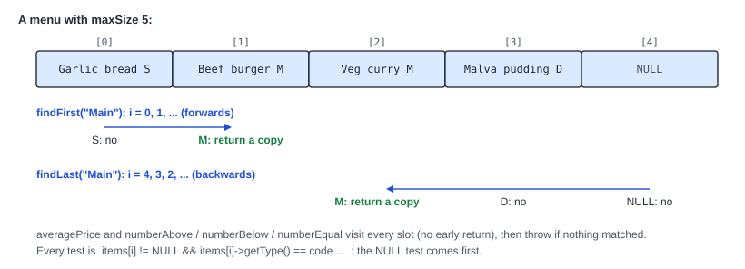
Trace of findFirst("Starter") on the third menu, dessertsOnly, which has 3 slots and holds only Ice cream (D) in slot 0. The chain sets code = 'S'.
i | i < maxSize | items[i] != NULL | getType() == 'S' | Result |
|---|---|---|---|---|
| 0 | 0 < 3, true | true (Ice cream) | false ('D') | next slot |
| 1 | 1 < 3, true | false | not tested | next slot |
| 2 | 2 < 3, true | false | not tested | next slot |
| 3 | 3 < 3, false: the loop ends | - | - | code == 'S' is true: throw StarterNotFound() |
In showFirst, the second catch fits. The full expected output of main.cpp:
First Starter: Garlic bread (S) R45.5 First Main: Beef burger (M) R120 First Dessert: Malva pudding (D) R60 InvalidType caught: Exception: Invalid type: Drink First Dessert: Ice cream (D) R35 StarterNotFound caught: Exception: Item not found MainNotFound caught: Exception: Item not found DessertNotFound caught: Exception: Item not found
Predict: the last call in main.cpp is showFirst(empty, "Dessert"), on a menu with 2 empty slots. Which line of findFirst throws, and which catch runs?
The chain sets code = 'D'. Both slots are NULL, so the loop ends without returning. code == 'S' and code == 'M' are false, so the last line throws DessertNotFound(). In showFirst, the DessertNotFound& catch runs and prints DessertNotFound caught: Exception: Item not found.
Each message below comes from a real build or run of A1-02 with one change.
throw new MainNotFound(); builds. But new makes the thrown object a pointer, MainNotFound*. No catch (...&) in showFirst fits a pointer, so nothing catches it and the program stops:
terminate called after throwing an instance of 'MainNotFound*' Process terminating with default action of signal 6 (SIGABRT)
Repair: throw the object, throw MainNotFound();.
One class for every type: after the loop, a single throw NotFoundException();. It builds and valgrind is clean. But the StarterNotFound&, MainNotFound& and DessertNotFound& catches cannot catch a base-class object, so catch (Exception& e) runs instead. The last three lines become:
Exception caught: Exception: Item not found Exception caught: Exception: Item not found Exception caught: Exception: Item not found
Repair: throw the class for the type, so that the output matches.
In a caller: a catch for the base class written above a catch for a derived class, or a catch by value, is a warning, and -Werror stops the build:
A_1.cpp:13:7: error: exception of type ‘DessertNotFound’ will be caught by earlier handler [-Werror=exceptions] A_1.cpp:20:24: error: catching polymorphic type ‘class Exception’ by value [-Werror=catch-value=]
The other kind of A_1 question: the exception classes themselves. msg is private to Exception, so a derived class cannot set it. Each constructor passes a message to the constructor of its own base class, after a colon. This is the member initialiser list.
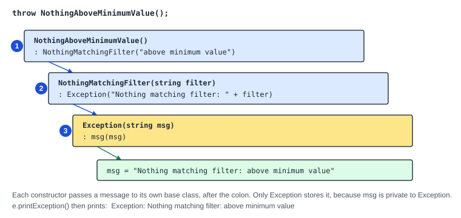
Two of the constructors from the reference code:
NothingMatchingFilter::NothingMatchingFilter(string filter) : Exception("Nothing matching filter: " + filter) {
}NothingAboveMinimumValue::NothingAboveMinimumValue() : NothingMatchingFilter("above minimum value") {
}Write the constructor of InvalidType. Its header line in the class is InvalidType(string type);, and its message is Invalid type: followed by type. Hint: which class is its direct base?
InvalidType::InvalidType(string type) : Exception("Invalid type: " + type) { and then }. The direct base is Exception, so the message goes to Exception(string) after the colon. The body is empty.
Practice question A1-01 asks for the whole hierarchy in A_1.cpp: Exception(string), printException() and the eight constructors of the derived classes. Use the message table above. Write them all, then check that each constructor calls the constructor of its direct base class.
#include "Exception.h"
// msg is private, so every subclass sets it through the constructor of its direct base class.
Exception::Exception(string msg) : msg(msg) {
}
void Exception::printException() {
cout << "Exception: " << msg << endl;
}
InvalidType::InvalidType(string type) : Exception("Invalid type: " + type) {
}
NothingMatchingFilter::NothingMatchingFilter(string filter) : Exception("Nothing matching filter: " + filter) {
}
NothingAboveMinimumValue::NothingAboveMinimumValue() : NothingMatchingFilter("above minimum value") {
}
NothingBelowMaximumValue::NothingBelowMaximumValue() : NothingMatchingFilter("below maximum value") {
}
NotFoundException::NotFoundException() : Exception("Item not found") {
}
StarterNotFound::StarterNotFound() : NotFoundException() {
}
MainNotFound::MainNotFound() : NotFoundException() {
}
DessertNotFound::DessertNotFound() : NotFoundException() {
}NothingAboveMinimumValue and NothingBelowMaximumValue call NothingMatchingFilter, not Exception, because that is their direct base. NothingMatchingFilter adds the words in front. The three not-found classes call NotFoundException(), which stores Item not found.
A_2 Operator overloading: member or friend
cout << menu; should print the whole menu, and menu + item should add an item. C++ knows << and + for numbers, not for a Menu. An operator function tells C++ what an operator means for a class. Figure 1 shows operator+, and the paper says every class has an operator<<. Either is a likely A_2 question.
Practice question A2-02 gives this line in the Menu class:
friend ostream& operator<<(ostream& out, const Menu& menu);It must print a heading, Menu (max N):, and then one line for every slot: two spaces, [, the index, ], one space, and then the item or the word empty. Every line ends with endl. For a menu of size 3 with two items:
Menu (max 3): [0] Garlic bread (S) R45.5 [1] Beef burger (M) R120 [2] empty
Write to out, not to cout, and return out.
Assumed
The print formats of Item and Menu. In the exam, the expected output in the question decides.
When you write an operator, C++ calls a function with a fixed name. An operand is a value an operator works on: in a + b, a and b are the operands. The picture shows four cases from the two scenarios.
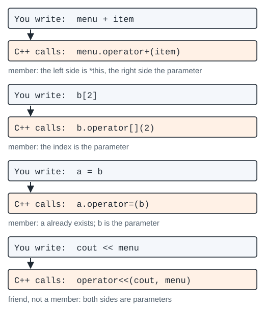
| Member function | Friend function | |
|---|---|---|
| Example | Menu& operator+(Item* item); | friend ostream& operator<<(ostream& out, const Menu& menu); |
| The left operand | the object itself (*this) | the first parameter |
| First line in the .cpp file | Menu& Menu::operator+(Item* item) { | ostream& operator<<(ostream& out, const Menu& menu) {: no Menu:: and no friend |
| Reads private members | directly: maxSize | through the parameter: menu.maxSize |
<< has cout on its left, and cout is an ostream, not a Menu. So operator<< cannot be a member of Menu. It is a friend, so that it can still read maxSize and items.
The smallest case is Item’s operator<<, from the reference code:
ostream& operator<<(ostream& out, const Item& item) {
out << item.name << " (" << item.type << ") R" << item.price;
return out;
}It sends each piece to out and returns out. Returning the stream is what makes a chain work. cout << item << endl; is read as (cout << item) << endl;: the first call returns cout, which becomes the left side of the second <<.
Try this
An Item has type 'D', name Malva pudding and price 60. What does cout << item << "!" << endl; print?
Hint: follow the order of the pieces in the function.
Malva pudding (D) R60! and then a newline. A float of 60 prints as 60, with no decimals. The "!" follows at once, because operator<< prints no newline.
First line: copy the header line, remove friend, and add no Menu::. Heading: one line with menu.maxSize. Loop: every slot from 0 to menu.maxSize - 1, the empty ones too. Special case inside the loop: a NULL slot prints empty. Otherwise *menu.items[i] is an Item, so out << *menu.items[i] calls Item’s operator<<. End: return out.
#include "Menu.h"
ostream& operator<<(ostream& out, const Menu& menu) {
out << "Menu (max " << menu.maxSize << "):" << endl;
for (int i = 0; i < menu.maxSize; i++) {
out << " [" << i << "] ";
// An empty slot is NULL. Never dereference it.
if (menu.items[i] == NULL) {
out << "empty";
} else {
out << *menu.items[i];
}
out << endl;
}
return out;
}Download this solution (it saves as A_2.cpp)
The comment in the code says: never dereference an empty slot. To dereference a pointer is to follow it to the object, with * or ->.
| Condition | True means | False means |
|---|---|---|
i < menu.maxSize | Slot i exists: print its line. | Every slot has a line. Leave the loop and return out. |
menu.items[i] == NULL | An empty slot: print empty. | The slot holds an item: print it with Item’s operator<<. |
The endl sits after the if / else, so it runs for both kinds of slot. *menu.items[i] prints the item. menu.items[i] without the * would print the address in the pointer.
The second print in main.cpp runs after two items were added to a Menu(4):
i | i < 4 | items[i] == NULL | Printed line |
|---|---|---|---|
| - | - | - | Menu (max 4): |
| 0 | true | false | [0] Garlic bread (S) R45.5 |
| 1 | true | false | [1] Beef burger (M) R120 |
| 2 | true | true | [2] empty |
| 3 | true | true | [3] empty |
| 4 | false: the loop ends | - | - |
The whole expected output. The last call is cout << menu << "(end)" << endl;, so (end) appears on its own line, after the menu’s last endl:
Menu (max 4): [0] empty [1] empty [2] empty [3] empty Menu (max 4): [0] Garlic bread (S) R45.5 [1] Beef burger (M) R120 [2] empty [3] empty Menu (max 4): [0] Garlic bread (S) R45.5 [1] Beef burger (M) R120 [2] Malva pudding (D) R60 [3] Veg curry (M) R95.5 (end)
Predict: what does cout << menu; print for a Menu(0)?
Only Menu (max 0): and a newline. 0 < 0 is false at once, so the loop body never runs.
No NULL test: out << *menu.items[i]; for every slot. The first print is of an empty menu, so slot 0 is already NULL. The heading prints, and then the program crashes:
Menu (max 4): Invalid read of size 8 Address 0x10 is not stack'd, malloc'd or (recently) free'd Process terminating with default action of signal 11 (SIGSEGV)
“Address 0x10” is close to 0: the program read a member through a NULL pointer. Repair: test menu.items[i] == NULL first.
No return out;:
A_2.cpp:15:1: error: no return statement in function returning non-void [-Werror=return-type]
Calling a function that is not const: in A2-03, operator<< for Exception gets const Exception& e. e.printException() does not compile there, because printException() is not a const member function:
A_2.cpp:6:21: error: passing ‘const Exception’ as ‘this’ argument discards qualifiers [-fpermissive]
Repair: a friend may read e.msg directly.
A member operator: Menu::operator+. menu + item calls menu.operator+(item). The menu is *this, and the item pointer is the parameter. It returns Menu&, the menu itself, so menu + a + b; adds a and then b to the same menu.
// The menu owns every item given to it. The item goes in the first empty (NULL) slot.
// If the menu is full, the item is deleted and the menu does not change.
Menu& Menu::operator+(Item* item) {
for (int i = 0; i < maxSize; i++) {
if (items[i] == NULL) {
items[i] = item;
return *this;
}
}
delete item;
return *this;
}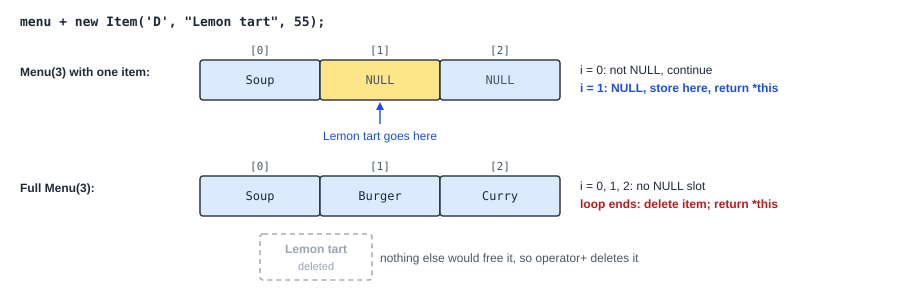
The return *this; inside the loop ends the function at the first NULL slot, so the item is stored once.
Practice question A2-03 asks for friend ostream& operator<<(ostream& out, const Exception& e);. It prints Exception: and the message, with no newline. Write its first line and its body. Hint: the message is private, and the function is a friend.
ostream& operator<<(ostream& out, const Exception& e) {, then out << "Exception: " << e.msg;, then return out; and }. A friend may read e.msg. It cannot call e.printException(), because e is const.
Practice question A2-06 gives two member operators of Item:
bool operator==(const Item& other) const;
bool operator<(const Item& other) const;a == b is true when the type, the name and the price are all equal. a < b is true when the price of a is less than the price of b. Write both, and say which object is the left operand inside each function.
#include "Item.h"
bool Item::operator==(const Item& other) const {
// All three members must match.
return type == other.type && name == other.name && price == other.price;
}
bool Item::operator<(const Item& other) const {
// Only the price decides. Equal prices give false.
return price < other.price;
}Both are members, so the left operand is the object itself: type and price without a prefix. The right operand is other. The const after the parameter list is copied from the header. If it is left out, the first line no longer matches the declaration and g++ stops.
A_3 Assignment operator: four steps
After a = b;, menu a should hold the same items as menu b, but as its own copies. Then changing b later must not change a, and each destructor deletes only its own items.
a = b calls a.operator=(b). Figure 1 gives Menu no operator=, although Menu owns memory. So Menu::operator= is the likely A_3 question, and every practice A_3 question asks for an operator= or a copy constructor.
Practice question A3-02 adds this line to the Menu class:
Menu& operator=(const Menu& other);- After
a = b;,ahas the samemaxSizeasb. Slotiofaholds a new copy of the item in slotiofb, orNULLif that slot ofbisNULL. - The items and the array that
aheld before must be freed. a = a;must leaveaunchanged, anda = b = c;must work.
Assumed
The menu owns its items (gap 6). The question text decides in the exam.
An assignment operator changes an object that already exists. That is the difference from a copy constructor, which makes a new object. Menu a(b); calls the copy constructor. a = b;, for an a made earlier, calls operator=.
Because a already exists, it already owns an array and items. So operator= has four steps, always in this order:
- Self-check:
if (this == &other) return *this;.thisis the address of the object on the left, and&otherthe address of the object on the right. If they are equal, it isa = a;, and there is nothing to do. - Free the old memory: each item, then the array.
- Copy deeply: copy
maxSize, make a new array, and make a new item for each item ofother. - Return
*this: the object itself, so thata = b = c;works. It is read asa = (b = c);.
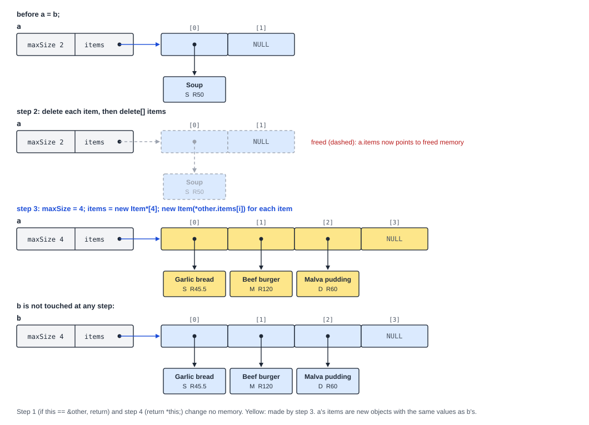
Why write operator= at all? If a class does not declare one, C++ writes one that copies each member. For Menu that copies maxSize and the address in items. Both menus then share one array.
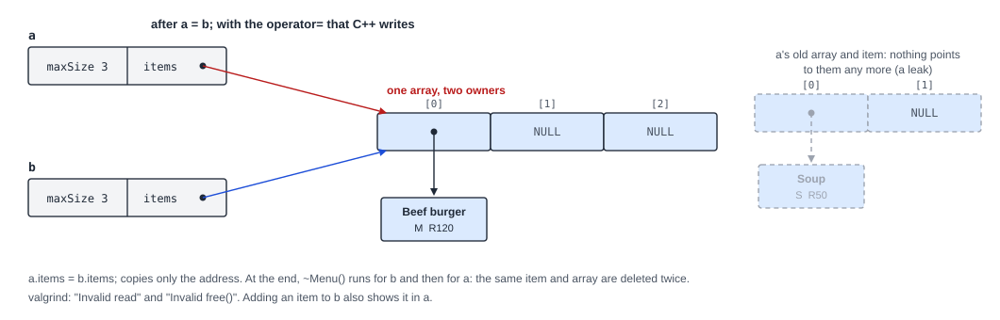
With A3-02’s main.cpp and no operator= in Menu.h, the program builds. Section 2 adds Veg curry to b, and it also shows in a:
a has not changed: Menu (max 4): [0] Garlic bread (S) R45.5 [1] Beef burger (M) R120 [2] Malva pudding (D) R60 [3] Veg curry (M) R95.5
valgrind then reports, among other lines:
Invalid read of size 8 Invalid free() / delete / delete[] / realloc() definitely lost: 48 bytes in 2 blocks
Try this
With the shallow copy, a and b share one array of 4 slots holding 3 items. How many times does each item get deleted when main ends?
Hint: how many destructors run, and what does each one delete?
Twice. ~Menu() runs for b and then for a, and both loops delete the same 3 items and the same array. The second delete of each is the “Invalid free()”.
Write the four steps in order. In step 3, a slot of other that is NULL stays NULL. Otherwise new Item(*other.items[i]) calls Item’s copy constructor and makes a new item with the same type, name and price.
#include "Menu.h"
Menu& Menu::operator=(const Menu& other) {
if (this == &other) {
return *this;
}
for (int i = 0; i < maxSize; i++) {
delete items[i];
}
delete[] items;
maxSize = other.maxSize;
items = new Item*[maxSize];
for (int i = 0; i < maxSize; i++) {
if (other.items[i] == NULL) {
items[i] = NULL;
} else {
items[i] = new Item(*other.items[i]);
}
}
return *this;
}| Condition | True means | False means |
|---|---|---|
this == &other | Self-assignment, a = a;: return at once. Freeing first would destroy the data that must be copied. | Two different menus: go on to step 2. |
i < maxSize | (first loop) Slot i of the old array: delete its item. maxSize is still the old size here. | All old items are freed. Free the array. |
i < maxSize | (second loop) maxSize is now other.maxSize: fill slot i of the new array. | Every slot is set. Return *this. |
other.items[i] == NULL | Copy the empty slot as NULL. *other.items[i] would crash. | Make a new copy of the item. |
The order of the lines in step 3 matters: maxSize = other.maxSize; must come before new Item*[maxSize], or the new array has the old size.
Section 1 of main.cpp: a is a Menu(2) holding Soup, and b is a Menu(4) holding Garlic bread, Beef burger and Malva pudding. Trace of a = b;:
| Step | Code | a.maxSize | a.items points to |
|---|---|---|---|
| 1 | this == &other is false | 2 | the old array: Soup, NULL |
| 2 | delete items[0], delete items[1] (NULL, does nothing), delete[] items | 2 | freed memory |
| 3 | maxSize = other.maxSize; | 4 | freed memory |
| 3 | items = new Item*[maxSize]; | 4 | a new array of 4 slots, not yet set |
| 3 | loop i = 0 to 3: new Garlic bread, new Beef burger, new Malva pudding, NULL | 4 | the new array with 3 new items |
| 4 | return *this; | 4 | the new array |
Section 2 then adds Veg curry to b, and a does not change. The first 30 lines of the expected output:
--- 1. a = b, where b is bigger --- a before: Menu (max 2): [0] Soup (S) R50 [1] empty b: Menu (max 4): [0] Garlic bread (S) R45.5 [1] Beef burger (M) R120 [2] Malva pudding (D) R60 [3] empty a after a = b: Menu (max 4): [0] Garlic bread (S) R45.5 [1] Beef burger (M) R120 [2] Malva pudding (D) R60 [3] empty --- 2. the copy is deep --- b after adding Veg curry: Menu (max 4): [0] Garlic bread (S) R45.5 [1] Beef burger (M) R120 [2] Malva pudding (D) R60 [3] Veg curry (M) R95.5 a has not changed: Menu (max 4): [0] Garlic bread (S) R45.5 [1] Beef burger (M) R120 [2] Malva pudding (D) R60 [3] empty
Predict: section 4 runs a = b = c;, where c is a Menu(1) holding Lemon tart. Which call runs first, and what do a and b print afterwards?
b = c runs first, because = is read from right to left. It returns b itself, which is then the right side of a = b. Both print Menu (max 1): and [0] Lemon tart (D) R55.
Each result comes from a real run of A3-02 with one change.
| Change | What happens |
|---|---|
| No self-check | Section 3, a = a;, frees a’s items and array and makes a new array. Then it copies from that new array, because other is a itself, and its slots were never set. valgrind reports: Conditional jump or move depends on uninitialised value(s) |
Only delete[] items; in step 2 | The output is right, but the old items are never freed: definitely lost: 384 bytes in 8 blocks |
items[i] = other.items[i]; in step 3 | Copies the pointers, not the items. Both menus delete the same items at the end: Invalid free() / delete / delete[] / realloc() |
No maxSize = other.maxSize; | The new array keeps the old size, 2. a loses Malva pudding, and in section 4 the loop reads past the end of c’s array of 1 slot: Invalid read of size 8 |
After a = b; with no maxSize line, a prints:
a after a = b: Menu (max 2): [0] Garlic bread (S) R45.5 [1] Beef burger (M) R120
The same four steps for a class with an array of values: Binary. A Binary owns one array of bool.
Compare it with the copy constructor of Binary from the reference code. The copy constructor has no steps 1, 2 and 4: a new object has no old memory and nothing to return.
Binary::Binary(const Binary& other) {
size = other.size;
array = new bool[size];
for (int i = 0; i < size; i++) {
array[i] = other.array[i];
}
}Write the first line of Binary’s operator= and its step 1. The declaration is Binary& operator=(const Binary& other);. Hint: copy the return type, then add the class name in front of the function name.
Binary& Binary::operator=(const Binary& other) {, then if (this == &other) {, return *this;, }.
Now write all of practice question A3-05, Binary::operator=. After a = b;, a has the size and the bits of b, in its own array. a = a; and a = b = c; must work. Then name the step that each group of lines does.
#include "Binary.h"
Binary& Binary::operator=(const Binary& other) {
if (this == &other) {
return *this;
}
delete[] array;
size = other.size;
array = new bool[size];
for (int i = 0; i < size; i++) {
array[i] = other.array[i];
}
return *this;
}Lines 4 to 6 are step 1. Line 8 is step 2: one delete[], because the array holds values, not pointers. Lines 10 to 14 are step 3: the size first, then a new array of that size, then each bit. Line 16 is step 4.
B_1 Recursion: one bit per call
The binary string 1011 has the value 11 in base 10. A loop could add up the bits. B_1 is about recursion, so the function must call itself instead, with one bit handled in each call.
Assumed
As in every B_1 practice question: no loops (for, while, do) and no helper functions, or the answer scores 0. A helper function is an extra function you write, apart from the one the question asks for. Follow the question text on the day.
Practice question B1-01 gives this line in the Binary class:
int toDecimal(int index);- It returns the base-10 value of the bits from index 0 up to and including
index.array[0]is the leftmost bit, the one with the highest place value. - For
1011:toDecimal(3)is 11 (all four bits),toDecimal(1)is 2 (the bits10) andtoDecimal(0)is 1. - If
indexis below 0, orindex >= size, return 0.
Assumed
Binary(string) turns each '1' into true, and array[0] is the leftmost character (gap 1).
A recursive function calls itself with a smaller problem. Every recursive function has two parts:
- a base case: an input small enough to answer at once, with no call;
- a recursive case: answer the problem using the answer to a smaller one, from a call to the same function.
Each call has its own copy of its parameters. A call that calls itself waits until the inner call returns, then uses that value. Each call must move the parameter closer to the base case, or the calls never end.
For toDecimal: adding one bit on the right doubles the value and adds the new bit. 10 is 2, so 101 is 2 × 2 + 1 = 5. So:
toDecimal(index) = 2 × toDecimal(index - 1) + (bit at index) toDecimal(-1) = 0 (no bits left: the base case)
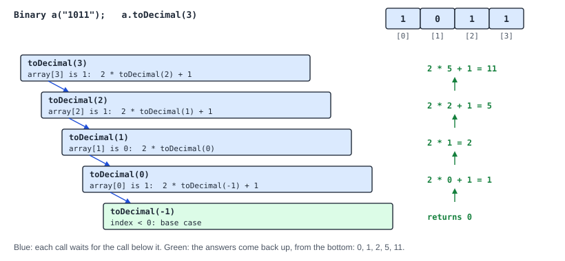
Try this
For Binary b("110"), what does b.toDecimal(2) return? Write the chain of calls.
Hint: start from the base case and work up.
toDecimal(-1) = 0. toDecimal(0) = 2 × 0 + 1 = 1 (bit 0 is 1). toDecimal(1) = 2 × 1 + 1 = 3 (bit 1 is 1). toDecimal(2) = 2 × 3 + 0 = 6 (bit 2 is 0). So it returns 6.
Base case and invalid input first: one test covers both. index < 0 is the base case (the call after index 0), and index >= size is an invalid index. Both return 0. Recursive case: 2 * toDecimal(index - 1), plus 1 if array[index] is true. The call uses index - 1, which moves one bit to the left, toward the base case.
#include "Binary.h"
// Returns the decimal value of the bits from index 0 up to and including index.
// array[0] is the leftmost bit (the most significant bit).
int Binary::toDecimal(int index) {
// Invalid index, and also the stop case: index -1 means "no bits left".
if (index < 0 || index >= size) {
return 0;
}
// Recursive case: the value of the bits before index, shifted one place left,
// plus this bit.
if (array[index]) {
return 2 * toDecimal(index - 1) + 1;
}
return 2 * toDecimal(index - 1);
}| Condition | True means | False means |
|---|---|---|
index < 0 || index >= size | No bit to read: the base case (index is -1), or an invalid index. Return 0, with no call. | A valid bit: go on to the recursive case. array[index] is safe to read. |
array[index] | The bit is 1: return 2 * toDecimal(index - 1) + 1. | The bit is 0: return 2 * toDecimal(index - 1). |
|| means “or”: the whole test is true if either part is true. It stops as soon as one part is true, so with index = -1, index >= size is not even tested.
The calls for a.toDecimal(3), with a = 1011. Read the first four columns down. Read the last column up, from the base case.
| Call | index < 0 || index >= 4 | array[index] | Waits for | Returns |
|---|---|---|---|---|
toDecimal(3) | false | true (1) | toDecimal(2) | 2 × 5 + 1 = 11 |
toDecimal(2) | false | true (1) | toDecimal(1) | 2 × 2 + 1 = 5 |
toDecimal(1) | false | false (0) | toDecimal(0) | 2 × 1 = 2 |
toDecimal(0) | false | true (1) | toDecimal(-1) | 2 × 0 + 1 = 1 |
toDecimal(-1) | true: base case | - | - | 0 |
The expected output of main.cpp:
1011 up to index 3: 11 1011 up to index 1: 2 1011 up to index 0: 1 00000101 whole string: 5 invalid index 4: 0 invalid index -1: 0
Predict: how many calls does b.toDecimal(b.getSize() - 1) make for b = 00000101, and what does it return?
The string has 8 bits, so the first call is toDecimal(7). The calls go 7, 6, ..., 0 and then -1: 9 calls. The leading zeros give 0 until index 5, where the value becomes 1. Then index 6 gives 2 and index 7 gives 2 × 2 + 1 = 5. It returns 5.
Each result comes from a real run of B1-01 with one change.
index > size instead of index >= size: toDecimal(4) on a 4-bit string reads array[4], one past the end. The line for the invalid index prints a random-looking number instead of 0:
invalid index 4: 22 Invalid read of size 1 Address 0x4e1e084 is 0 bytes after a block of size 4 alloc'd
toDecimal(index) instead of toDecimal(index - 1): the index never gets smaller, so the base case is never reached. Each call waits for another call, until the program runs out of memory for calls (the stack):
Stack overflow in thread #1: can't grow stack to 0x1ffe801000 Process terminating with default action of signal 11 (SIGSEGV)
Repair: every recursive call must move toward the base case.
Recursion on a list: a B_1 question may also take a node pointer. Practice question B1-04 counts the strings whose bit 0 is 1 (negative, in this question), from a node to the end of the list. The base case is curr == NULL, past the last node. The recursive call moves to curr->next().
#include "BinaryStrings.h"
// Counts the strings from curr to the end of the list whose first bit is 1.
int BinaryStrings::countNegative(Node<Binary>* curr) {
// Base case: past the last node (this also covers an empty list).
if (curr == NULL) {
return 0;
}
// The size test comes first: an empty string has no bit 0 to read.
if (curr->getData().getSize() > 0 && curr->getData()[0]) {
return 1 + countNegative(curr->next());
}
return countNegative(curr->next());
}The size test comes before [0]: an empty string has no bit 0. The calls for 100 -> 0011 -> 1101 -> 0101, from main.cpp. Read the first three columns down, and the last column up:
| Call on node | getSize() > 0 && [0] | Waits for | Returns |
|---|---|---|---|
100 | true: bit 0 is 1 | the call on 0011 | 1 + 1 = 2 |
0011 | false: bit 0 is 0 | the call on 1101 | 0 + 1 = 1 |
1101 | true: bit 0 is 1 | the call on 0101 | 1 + 0 = 1 |
0101 | false: bit 0 is 0 | the call on NULL | 0 + 0 = 0 |
NULL | curr == NULL: the base case | - | 0 |
So countNegative(head) returns 2: the strings 100 and 1101.
Practice question B1-07 asks for void setBits(string bits, int index);. It sets array[index], array[index + 1], and so on, from the characters at the same positions in bits. It stops at the end of the array or of the string. Write the stop test. Hint: there are three reasons to stop, and bits.length() is unsigned.
if (index < 0 || index >= size || index >= (int)bits.length()) {, return;, }. The (int) cast stops the signed and unsigned warning, which -Werror would turn into an error.
Now write all of setBits. A '1' gives true, and any other character gives false. For a Binary holding 0000, setBits("11", 0) gives 1100. Then setBits("0110", 2) gives 1110. Use no loop.
#include "Binary.h"
// Sets array[index], array[index + 1], ... from the same positions in bits.
// A '1' gives true; any other character gives false.
void Binary::setBits(string bits, int index) {
// Invalid input (index < 0), or the end of the array or of the string: stop.
// The (int) cast stops the signed/unsigned comparison warning (-Werror).
if (index < 0 || index >= size || index >= (int)bits.length()) {
return;
}
// Set this bit, then the rest.
array[index] = (bits[index] == '1');
setBits(bits, index + 1);
}The recursive case sets one bit, then calls setBits(bits, index + 1) for the rest. The index grows toward size or the string length, so one of the stop tests becomes true. (bits[index] == '1') is already true or false, so no if is needed.
The calls for b.setBits("11", 0), with b = 0000 (size 4):
| Call | index < 0 | index >= size | index >= (int)bits.length() | What happens |
|---|---|---|---|---|
setBits("11", 0) | false | false (0 >= 4) | false (0 >= 2) | array[0] = true, then call with index 1 |
setBits("11", 1) | false | false (1 >= 4) | false (1 >= 2) | array[1] = true, then call with index 2 |
setBits("11", 2) | false | false (2 >= 4) | true (2 >= 2) | return: the string has no character 2 |
The calls then return in reverse order and change nothing more. b is now 1100.
B_2 Linked lists: walk, then relink
A BinaryStrings list keeps Binary strings in nodes. Each node points to the next one. To put a new string in the middle, nothing is moved: two links are changed. The order of those two lines decides whether the list survives.
Figure 2 shows prepend and calculatePos, and the paper calls the diagram partial. So B_2 may ask for calculatePos, or for a new list function such as append, insertAt or removeAt.
Practice question B2-02 adds this line to BinaryStrings:
void insertAt(const Binary& b, int pos);- Make a new node with a copy of
b. After the call, it is the node at positionpos. The head is position 0. - If
posis 0 or less, or the list is empty, insert at the front. - If
posis equal to or greater than the number of nodes, append at the end. - Add 1 to
sizein every case. The last node’snext()must beNULL.
Example: for 000 -> 0011 -> 1101, insertAt(Binary("01"), 2) gives 000 -> 0011 -> 01 -> 1101.
Assumed
~Node() is empty, and ~BinaryStrings() deletes every node (gaps 4 and 5). The list prints as Empty or the strings joined by -> .
| Code | Meaning |
|---|---|
head | a pointer to the first node, or NULL for an empty list |
curr->getData() | the Binary in the node (a reference, so it can be read or changed) |
curr->next() | the link to the next node: NULL after the last node. It returns a reference to the link, so curr->next() = p; changes the link. |
curr = curr->next(); | move curr one node forward. The list does not change. |
new Node<Binary>(b) | a new node holding a copy of b, with its link set to NULL |
A walk starts a pointer at head and moves it forward until a condition stops it. The destructor in the reference code walks the whole list. It saves the node in temp before it moves on, because after delete the node’s link may not be read:
BinaryStrings::~BinaryStrings() {
Node<Binary>* curr = head;
while (curr != NULL) {
Node<Binary>* temp = curr;
curr = curr->next();
delete temp;
}
}The passes of the destructor on the list 01 -> 11:
| Pass | curr != NULL | temp | curr after curr = curr->next(); | Deleted |
|---|---|---|---|---|
| 1 | true (01) | 01 | 11 | 01 |
| 2 | true (11) | 11 | NULL | 11 |
| - | false: the loop ends | - | - | - |
In each pass, curr moves on before delete temp; runs, so no freed node is read.
The smallest insert is at the front. prepend, from the reference code:
// The new node holds a copy of b (Node<Binary> stores a Binary, made with the copy constructor).
void BinaryStrings::prepend(const Binary& b) {
Node<Binary>* newNode = new Node<Binary>(b);
newNode->next() = head;
head = newNode;
size++;
}The new node first points to the old first node, then head moves to the new node. If the list was empty, head was NULL, so the new node’s link stays NULL. That is right for a list of one node.
Try this
What goes wrong if the two middle lines of prepend are swapped: head = newNode; first, then newNode->next() = head;?
Hint: what is head when the second line runs?
After head = newNode;, head already is the new node. So newNode->next() = head; makes the node point to itself. The old nodes are lost (a leak), and a walk never reaches NULL.
Make the node. Special case first: pos <= 0 or an empty list: the same two lines as prepend, then size++ and return. Normal case: walk prev to the node before position pos. It stops early at the last node, which covers a pos past the end. Relink in the right order: first the new node takes prev’s link, then prev points to the new node. Count: size++.
#include "BinaryStrings.h"
// Inserts a copy of b so that it becomes the node at position pos (the head is position 0).
// pos <= 0 inserts at the front. A pos past the end appends.
void BinaryStrings::insertAt(const Binary& b, int pos) {
Node<Binary>* newNode = new Node<Binary>(b);
// Front case: also covers the empty list.
if (pos <= 0 || head == NULL) {
newNode->next() = head;
head = newNode;
size++;
return;
}
// Walk to the node before position pos, or to the last node.
Node<Binary>* prev = head;
int count = 1;
while (prev->next() != NULL && count < pos) {
prev = prev->next();
count++;
}
// Link the new node in after prev.
newNode->next() = prev->next();
prev->next() = newNode;
size++;
}| Condition | True means | False means |
|---|---|---|
pos <= 0 || head == NULL | Insert at the front, then return. | There is at least one node and pos is 1 or more: walk. |
prev->next() != NULL | There is a node after prev: the walk may go on. | prev is the last node: stop and append after it. |
count < pos | prev is at position count - 1, not yet the node before pos: move on. | prev is the node before position pos: stop. |
The loop runs only while both parts are true. count starts at 1, because prev starts at the head (position 0), and the new node goes after prev.
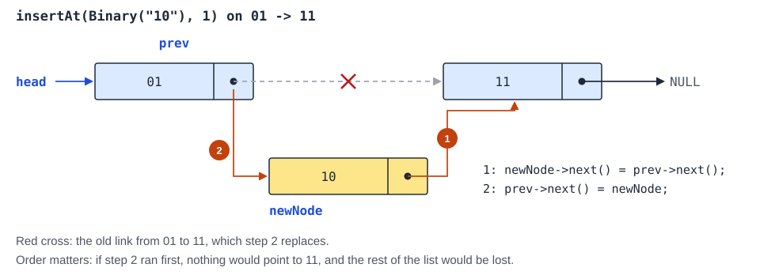
In main.cpp, the third call is insertAt(Binary("01"), 2) on 1 -> 000 -> 0011 -> 1101 (size 4):
| Moment | prev | count | prev->next() != NULL | count < 2 |
|---|---|---|---|---|
| before the loop | 1 (position 0) | 1 | true | true: move |
| after one pass | 000 (position 1) | 2 | true | false: stop |
| step 1 | 000 | 2 | - | 01 now points to 0011 |
| step 2 | 000 | 2 | - | 000 now points to 01 |
The list is 1 -> 000 -> 01 -> 0011 -> 1101 and size is 5. The full expected output:
000 -> 0011 -> 1101 (size 3) insertAt(1, 0): 1 -> 000 -> 0011 -> 1101 (size 4) insertAt(01, 2): 1 -> 000 -> 01 -> 0011 -> 1101 (size 5) insertAt(111, 99): 1 -> 000 -> 01 -> 0011 -> 1101 -> 111 (size 6) insertAt(10, -3): 10 -> 1 -> 000 -> 01 -> 0011 -> 1101 -> 111 (size 7)
Predict: the next call is insertAt(Binary("111"), 99) on the list of 5 nodes. Where does the walk stop, and why?
At the last node, 1101. count only reaches 5 there, which is still below 99, but prev->next() != NULL is false, so the loop ends. The new node is linked after 1101, and its link becomes NULL: it is the new last node.
The two relink lines swapped. prev->next() = newNode; runs first, so newNode->next() = prev->next(); makes the new node point to itself. The rest of the list is lost. The program builds, and then the third line of output never ends. The start of it:
insertAt(1, 0): 1 -> 000 -> 0011 -> 1101 (size 4) insertAt(01, 2): 1 -> 000 -> 01 -> 01 -> 01 -> 01 -> 01 -> 01 -> 01 -> 01 -> 01 -> 01 -> ...
The program had to be stopped. valgrind then reports the lost nodes:
Process terminating with default action of signal 15 (SIGTERM) definitely lost: 24 bytes in 1 blocks
Only head == NULL as the front test. It builds and valgrind is clean, but insertAt(Binary("1"), 0) now inserts after the head:
insertAt(1, 0): 000 -> 1 -> 0011 -> 1101 (size 4)
Repair: test pos <= 0 too. With count starting at 1, the walk cannot place a node at position 0.
A walk that reads, not relinks: calculatePos. The diagram shows it but does not explain it. The reference code counts the positive strings (Assumed, gap 6): bit 0 is 0, and some later bit is 1.
// Assumption (the scenario does not say): "Pos" means positive. A binary string counts as
// positive when its first bit is 0 (two's complement sign bit) and it has at least one 1.
int BinaryStrings::calculatePos() {
int count = 0;
Node<Binary>* curr = head;
while (curr != NULL) {
Binary& b = curr->getData();
if (b.getSize() > 0 && b[0] == false) {
for (int i = 1; i < b.getSize(); i++) {
if (b[i]) {
count++;
break;
}
}
}
curr = curr->next();
}
return count;
}The walk visits every node, so the loop test is only curr != NULL. break leaves the inner for loop at the first 1, so each string is counted once. B_2 allows loops; only the B_1 practice questions ban them.
The trace on the reference list 000 -> 0011 -> 1101 -> 0101:
curr | getSize() > 0 && b[0] == false | i (inner loop) | b[i] | count after | What happens |
|---|---|---|---|---|---|
000 | true | 1 | false | 0 | next i |
000 | true | 2 | false | 0 | next i |
000 | true | 3 | - | 0 | 3 < 3 is false: the inner loop ends |
0011 | true | 1 | false | 0 | next i |
0011 | true | 2 | true | 1 | count++, then break leaves the inner loop |
1101 | false: bit 0 is 1 | - | - | 1 | the inner loop is skipped |
0101 | true | 1 | true | 2 | count++, then break |
NULL | - | - | - | 2 | curr != NULL is false: return 2 |
The reference main.cpp prints positive: 2.
Write a walk that leaves curr at the last node of a list that is not empty. This is the first half of append. Hint: stop when the next link is NULL, not when curr is.
Node<Binary>* curr = head;, then while (curr->next() != NULL) { curr = curr->next(); }. A test of curr != NULL would end with curr at NULL, and there is no node to link after.
Practice question B2-08 asks for the copy constructor BinaryStrings(const BinaryStrings& other);. The new list gets its own nodes, with copies of the same strings in the same order. size must match. Write it with one walk over other, and keep a pointer to the last node of the new list.
#include "BinaryStrings.h"
// Deep copy: the new list gets its own nodes, with copies of the same strings in
// the same order. The two lists share no node and no bool array.
BinaryStrings::BinaryStrings(const BinaryStrings& other) : head(NULL), size(0) {
Node<Binary>* tail = NULL; // last node of the new list
Node<Binary>* curr = other.head;
while (curr != NULL) {
// The new node makes its own copy of the Binary (deep copy of the array).
Node<Binary>* newNode = new Node<Binary>(curr->getData());
if (tail == NULL) {
head = newNode; // first node of the new list
} else {
tail->next() = newNode; // link after the current last node
}
tail = newNode;
size++;
curr = curr->next();
}
}The new list starts empty through the initialiser list. tail is NULL only for the first node, which becomes head. Each later node is linked after tail. new Node<Binary>(curr->getData()) copies the Binary with its copy constructor, so the two lists share no bool array.
The passes for BinaryStrings copy(list); in main.cpp, where list is 000 -> 0011 -> 1101. A new node is written with a prime: 000' is the copy of 000.
| Pass | curr | tail == NULL | Link set | tail after | size | curr after |
|---|---|---|---|---|---|---|
| 1 | 000 | true | head = 000' | 000' | 1 | 0011 |
| 2 | 0011 | false | 000' now points to 0011' | 0011' | 2 | 1101 |
| 3 | 1101 | false | 0011' now points to 1101' | 1101' | 3 | NULL |
| - | NULL | - | - | - | - | curr != NULL is false: the loop ends |
B_3 Template specialisation: a version for Binary
A function template works for many types. isEqual(a, b) compares two values with ==, which works for int and string. Binary has no operator==, so the template cannot compile for it. A specialisation is a separate version of the template, written for one exact type.
Figure 2 shows only Node as a template. So the template to specialise may be new on the day, in a given header, or it may be a member function of Node<Binary>.
Practice question B3-03 gives Templates.h:
// General template: true when the two values are equal.
template <class T>
bool isEqual(const T& a, const T& b) {
return a == b;
}
// Specialisation for Binary (Binary has no operator==). Declared here, after
// the general template and before any use. Defined in B_3.cpp.
template <>
bool isEqual<Binary>(const Binary& a, const Binary& b);- Return
truewhenaandbhave the same size and the same bit at every index.011and11are not equal. - When the sizes differ, compare no bits. Do not change either string, and print nothing.
- Write the definition in
B_3.cpp. Do not change the header.
In template <class T>, T is a type parameter. When main calls isEqual(3, 3), C++ replaces every T with int and compiles that version. isEqual(string("on"), string("off")) gives a second version, for string.
A specialisation tells C++: for this type, use this body instead. It has three marks:
- the line
template <>, with empty angle brackets: no type parameter is left; - the type in angle brackets after the function name:
isEqual<Binary>; - every
Tof the general template replaced byBinary, soconst T&becomesconst Binary&.
A specialisation is an ordinary function, not a template. So it must be defined in exactly one .cpp file, and declared after the general template and before its first use. The picture shows the three file layouts in the practice questions.
![Three layouts. 1, function template: Templates.h holds the general template and the template <> declaration; B_3.cpp (compiled on its own) includes it and holds template <> ... name<Binary>(...) { body }. 2, member of Node<T>: Node.h holds class Node, #include "Node.cpp" and the template <> declaration; B_3.cpp includes it and holds template <> int Node<Binary>::toInt() { }. 3, header includes B_3.cpp: Templates.h holds the general template, the declaration and #include "B_3.cpp"; B_3.cpp has an include guard and holds template <> inline ... { body }. Because the header also includes B_3.cpp, the body is compiled twice and needs inline; the include guard stops it being read twice in one file.](assets/diagrams/b3_files_m.svg)
main.cpp of B3-03 calls the template three ways. Here is the start of its main:
cout << "3 and 3: " << (isEqual(3, 3) ? "equal" : "not equal") << endl;
cout << "on and off: " << (isEqual(string("on"), string("off")) ? "equal" : "not equal") << endl;
show(Binary("0101"), Binary("0101"));Try this
Which version of isEqual runs for each of these three lines? (show calls isEqual with two Binary objects.)
Hint: which types are the two arguments?
Line 1: the general template with T = int. Line 2: the general template with T = string. Line 3: the specialisation isEqual<Binary>, because Templates.h declares it and both arguments are Binary.
First two lines: copy the declaration from Templates.h and replace the ; with a body. Special case first: different sizes return false before any bit is read. Normal case: compare bit i for every index, and return false at the first difference. End: no difference was found, so return true. a[i] works on a const Binary& because the header has a const version of operator[] (gap 2).
#include "Templates.h"
// Two Binary objects are equal when they have the same size and the same bit at
// every index. (Binary has no operator==, so the general template cannot be used.)
template <>
bool isEqual<Binary>(const Binary& a, const Binary& b) {
if (a.getSize() != b.getSize()) {
return false;
}
for (int i = 0; i < a.getSize(); i++) {
if (a[i] != b[i]) {
return false;
}
}
return true;
}| Condition | True means | False means |
|---|---|---|
a.getSize() != b.getSize() | Different sizes: not equal. Return at once, so no bit outside a string is read. | Same size: compare the bits. |
i < a.getSize() | Bit i exists in both strings. | Every bit matched: leave the loop and return true. |
a[i] != b[i] | A difference: return false. The rest is not compared. | This bit matches: go on. |
Trace of show(Binary("0101"), Binary("0100")):
i | i < 4 | a[i] | b[i] | a[i] != b[i] |
|---|---|---|---|---|
| - | sizes 4 and 4: equal | - | - | - |
| 0 | true | 0 | 0 | false |
| 1 | true | 1 | 1 | false |
| 2 | true | 0 | 0 | false |
| 3 | true | 1 | 0 | true: return false |
The expected output:
3 and 3: equal on and off: not equal 0101 and 0101: equal 0101 and 0100: not equal 011 and 11: not equal 11 and 011: not equal
Predict: 011 and 11 have the same value, 3. What does isEqual<Binary> return for them, and at which line?
false, at the size test: 3 is not equal to 2. The loop never runs. The question compares strings, not values.
Each message comes from a real build of B3-03 or B3-05 with one change.
No template <> line:
B_3.cpp:5:6: error: specializing member ‘::isEqual<Binary>’ requires ‘template<>’ syntax
No specialisation at all (the declaration removed from the header): C++ compiles the general template for Binary, and == does not exist. The first line of a long message:
Templates.h:11:14: error: no match for ‘operator==’ (operand types are ‘const Binary’ and ‘const Binary’)
A member of Node<Binary> (B3-05) written with template <class T>: that line starts a template, but Node<Binary>::toInt is for one exact type:
B_3.cpp:6:5: error: no declaration matches ‘int Node<Binary>::toInt()’ Node.h:32:5: note: candidate is: ‘int Node<T>::toInt() [with T = Binary]’
Repair: template <>, with nothing between the brackets.
Two type parameters: practice question B3-04 has template <class T, class U> T addition(T v1, U v2) in Templates.h. Adding two binary strings is not allowed, so the version for two Binary objects throws. Both types go in the angle brackets, in order:
#include "Templates.h"
// Adding two binary strings is not allowed, so this specialisation throws
// (the same pattern as the L19 example for two chars).
template <>
Binary addition<Binary, Binary>(Binary v1, Binary v2) {
throw "Cannot add two binary strings";
}The return type T became Binary, and so did both parameter types. The function throws a string, which the caller catches with catch (const char* e). “L19” in the comment names an example in the course lectures; you do not need it here.
Practice question B3-01 has the general template template <class T> void printValue(const T& value). Write the first two lines of its specialisation for Binary. Hint: replace every T, and put the type after the name.
template <>, then void printValue<Binary>(const Binary& value) {.
Practice question B3-06 uses layout 3. Templates.h declares int countTrue<Binary>(Node<Binary>* head); and then includes B_3.cpp. For Binary, countTrue returns the number of true bits in all the strings from head to the end. Write the definition inside the include guard of B_3.cpp. Which keyword does layout 3 need, and why?
#ifndef B_3_CPP
#define B_3_CPP
#include "Templates.h"
// For a list of Binary strings, count every true bit in every string.
// inline: Templates.h includes this file, so this definition is compiled in every
// .cpp file that includes Templates.h (main.cpp and B_3.cpp). Without inline the
// link fails with "multiple definition".
template <>
inline int countTrue<Binary>(Node<Binary>* head) {
int count = 0;
Node<Binary>* curr = head;
while (curr != NULL) {
Binary& b = curr->getData();
for (int i = 0; i < b.getSize(); i++) {
if (b[i]) {
count++;
}
}
curr = curr->next();
}
return count;
}
#endifThe keyword is inline, before the return type. Templates.h includes B_3.cpp, so the definition is compiled in main.cpp and in B_3.cpp. Without inline, the link step finds two copies and stops. inline allows one identical copy in each file.
The trace of countTrue(list.getHead()) on 000 -> 0011 -> 1101 -> 0101. The inner loop tests i < b.getSize() and b[i] for every bit of the node:
curr | Bits tested (b[0] first) | true bits | count after the node |
|---|---|---|---|
000 | false, false, false | 0 | 0 |
0011 | false, false, true, true | 2 | 2 |
1101 | true, true, false, true | 3 | 5 |
0101 | false, true, false, true | 2 | 7 |
NULL | curr != NULL is false: the loop ends | - | returns 7 |